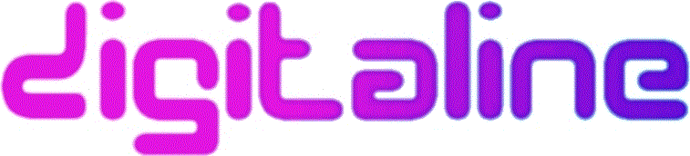
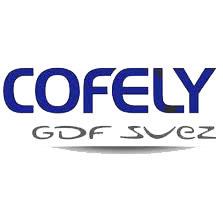
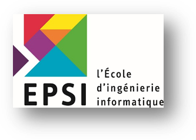
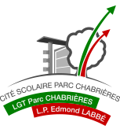

Gautier Le Bissonnais
Étudiant en Informatique - EPSI Lyon
L’informatique et les nouvelles technologies, ce sont autant de fascinantes composantes de notre environnement digitalisé. Aujourd’hui, nous assistons à l’évolution rapide de ces outils, tout en cherchant à atteindre une simplicité minimale pour une amélioration des performances maximales… C’est pour cette raison que je me suis dès l’adolescence tourné vers cet univers, et pourquoi ce domaine continue à me fasciner…
Mon objectif ? En faire mon métier… et – qui sait – peut-être y apporter ma contribution ! Que ce soit du développement Web (Back Office), du Mobile, de la Sécurité ou du Hacking, j'aime apprendre et entreprendre.
Ma curiosité pour l’info et les nouvelles tech m’ont amené à intégrer l'EPSI, école d’ingénierie informatique à Lyon. Aujourd’hui en 5ème année, je cherche un stage dans lequel je saurais faire mes preuves, dans un environnement start-up, qui saurait me challenger sur le plan technique autant que sur le process de gestion de projet.
Gestion de projet
Mon ambition à terme ? Occuper le poste de chef de projet de développement.
A l’EPSI, j’ai pu faire preuve en de maintes occasions d’un certain savoir-faire en terme de gestion d’équipe, notamment en tant que manager.
Ce qui me plaît dans la gestion de projet, c’est avant tout le relationnel, aspect clé d’un bon déroulement de travail en groupe, car il permet d’humaniser un travail d’apparence plutôt solitaire et de créer des synergies de travail formatrices.
Mise en place du projet, définition des tâches et de l'architecture, gestion de l'avancement... Ce sont là toutes des étapes que j’aime mettre en place, et que je maîtrise désormais grâce à mes expériences précédentes.
Développement Web
En matière de développement Web, le MVC n'a plus de secrets pour moi. J'ai travaillé sur des projets utilisant Symfony2, AngularJS et nodeJS. Bootstrap & JQuery sont à mon avis des outils indispensables que je connais et sait utiliser. Outre les Frameworks cités, j'ai également fait mes armes sur des sites en ASP.NET MVC5, PHP et Javascript.
Durant tous mes stages, j'ai travaillé sur des sites web ou des applications basées sur des technologies Web.
Développement mobile
Pour ce qui est du développement mobile, j'ai été responsable durant mes 4 mois de stage chez Personalized Software de l'application iOS/Android BidRight Lite développée en Cordova/AngularJS.
A titre personnel , je travaille actuellement sur une application mobile développée avec Xamarin : Weilyne. Petit projet en construction, sans prétention, il a pourtant une grande ambition : mettre les nouvelles technologies et la simplicité vers laquelle elles tendent au service du patient médical / au service du bien public afin de favoriser un accès aux données en toute transparence, favorisant le dialogue et le suivi.
Sécurité/Hacking
La sécurité informatique et le hacking, voilà deux domaines qui m’intéressent tout particulièrement… C’est pour cette raison que je suis membre de Root me (Mon profil) depuis plus d'un an. Résoudre les challenges, particulièrement ceux qui exploitent des failles web, la cryptanalyse et la stéganographie, se mesurer face à l’énigme, trouver l’élément clé… Un vrai passe-temps qui s’est traduit par la participation à 3 hackatons jusqu'a présent :
Centres d'ntêrets
Mis à part l'informatique et les nouvelles technologies, je suis féru de sport : escalade, tennis, tennis de table, karaté en étant plus jeune… Tout y passe ! Amateur de course – et de défis ! – j'ai également relevé le challenge du Mud Day Lyon 2015. Je suis également passioné de Ski et de sports Freestyle/Extrèmes (Skate, BMX, Snowboard, VTT, la liste est longue!) bien que non pratiquant. Mais le sport pour moi ne se pratique pas exclusivement en salle de grimpe ou sur un court… Je suis un grand fan de l’e-sport, et je me tiens régulièrement informé de la démocratisation de cette nouvelle conception de la compétition.
Expériences
-
Développeur Web
Ultimate Washer (Jupiter, Floride)J'ai participé à la création d’une solution web en C#.net/ASP MVC. Cette solution est déstinée a jouer le rôle d'un ERP qui permettrait de publier ses produits sur l'Amazon Market Place.
Responsable de la refonte d'une solution de reporting interne, passant du php procédural à un modèle MVC, avec l'ajout d'un graphe pour visualiser les données.
Réparation de multiples pages de la partie administration du site.
Conception d’un script en python de conversion de pages web, ayant pour objectif de transformer le structure du modèle "table" HTML au modèle grid de Bootstrap, afin de rendre le design responsive.
Compétences Techniques
- ASP.NET MVC5
- C#.Net
- PHP5
- Python
- Jquery
- Bootstrap
Compétences Organisationelles
- Méthodes Agiles
- Scrum
- Refonte de l'architecture de deux applications pour qu'elles adoptent le MVC
Logiciels/OS/Plateformes utilisés
- Windows
- Visual Studio 2015
- SQL Server 2012
- Team Foundation Server
-
Développeur Web/Mobile
Personalized Software (Dublin, Irlande)Responsable développement et maintenance de l’application bid-right-lite Android & iOS (Cordova, Angular, Jquery), l'application était basée sur une API REST élaborée en Java, sur laquelle j'ai du effectuer des modifications.
Repsonsable de la mise en place d'un système de notifications push, de l'implémentation d'un tableau de bord ainsi que de diverses améliorations ergonomiques.
Compétences Techniques
- AngularJS
- Cordova/Phonegap
- Jquery
- Bootstrap
- Java
Compétences Organisationelles
- Méthodes Agiles
- Scrum
- Gestion autonome d'une application
Logiciels/OS/Plateformes utilisés
- Ubuntu
- Eclipse
- IntelliJ
- Android
- iOS
- Redmine
-
 Développeur Web
Digitaline Conseil (Chaponost, France)Création du site enjoycorporation, Html et CSS Et javascript/Jquery, création du lecteur de musique.
Compétences Techniques
- Jquery
- HTML5/CSS3
- Flash
- Bootstrap
Compétences Organisationelles
- Télé-travail
- Autonomie
Logiciels/OS/Plateformes utilisés
- Windows
- Sublime Text
-
 Développeur Web/Intranet
Cofely Services GDF-SUEZ (Lyon, France)Mise à jour d’un outil de collecte de statistiques (C#, Sharepoint). Conception d’un logiciel interne pour améliorer la productivité de l’équipe(C#).
Compétences Techniques
- C#
- Sharepoint
Compétences Organisationelles
- Méthodes Agiles
- Développement en autonomie
- Suivi d'un projet à grande échelle
Logiciels/OS/Plateformes utilisés
- Windows
- Windows Server 2010
- SQL Server
- Visual Studio 2008
Formation
-
 Expert en informatique et systèmes d'information
Bac + 5 (Niveau I)
EPSI LyonDiplômes Obtenus
- Expert en informatique et systèmes d'information Titre Niveau I (Bac +5)Obtention en 2016
- TOEIC (Certification d'anglais)2015 (990/990)
- Bachelor en Informatique (Bac + 3)2014 (Mention Assez Bien)
- BTS - Services Informatiques aux Organisations (SIO) - Option SLAM 2013 (Mention Assez Bien)
-
 Baccalauréat Économique et Social
Bac
Lycée Parc ChabrièresDiplômes Obtenus
- BAC - Économique et social (ES) - Option Mathématiques 2011 (Mention Assez Bien)